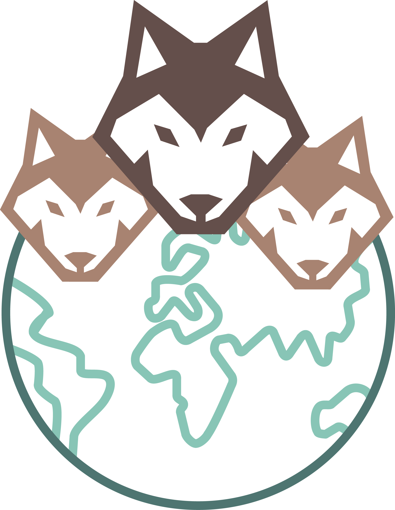

  <ion-header [translucent]="true">
    <ion-toolbar>
        <ion-buttons slot="start">
          <ion-back-button  class="pointer" text=""></ion-back-button>
        </ion-buttons>
        <ion-buttons slot="end" (click)="onDeleteAccount()">
          <ion-item>
            <ion-avatar>
              
            </ion-avatar>
          </ion-item>
        </ion-buttons>
       <ion-searchbar  class="listaUsuarios" autocomplete="on" (click)="dontShow=false" placeholder="Buscar usuarios registrados" slot="primary" showCancelButton="never" cancelButtonText="Custom Cancel"></ion-searchbar>
        <ion-buttons slot="end" routerLink="/perfil/{{currentUser.idPersona}}">
          <ion-avatar style="display: flex; justify-content: center; align-items: center; ">
            
          </ion-avatar>
        </ion-buttons>
        <ion-buttons slot="end" [routerLink]="['../interes']">
          <ion-avatar>
            
          </ion-avatar>
        </ion-buttons>
        <ion-buttons slot="end">
          <ion-avatar>
            
          </ion-avatar>
        </ion-buttons>

      <ion-buttons>
        <ion-button slot="end">

        </ion-button>
      </ion-buttons>
    </ion-toolbar>
  </ion-header>

  <ion-toolbar class="listaUsuarios scroll" *ngIf="searching">
    <ion-list >
      <ion-item *ngFor="let usuario of searchResult | async">
        <div style="display: flex; justify-content: center;">
          <ion-avatar>
            <!---->
            
          </ion-avatar>
        </div>
        {{ usuario.nickname }}
      </ion-item>
    </ion-list>
  </ion-toolbar>
